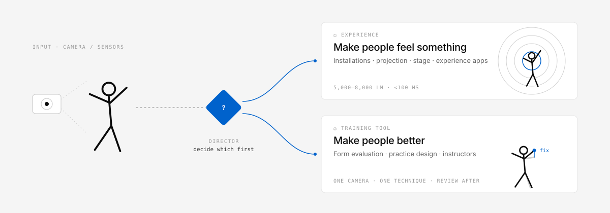

Something people experience
The exhibit you see in a museum or at an event, where video and sound react to how people move. Projection mapping, installations, stage visuals, experience-driven apps.
The goal is to make a visitor feel something.
Camera, sensors, human movement — decide what you are building first.
Something people experience, or a tool that makes people better at a movement? They need different technology, different users, different buyers and different definitions of success. These skills settle that first — then design the right one.

01Two kinds
The most common failure in this field is arguing about TouchDesigner versus Unreal, or about pose-estimation accuracy, before deciding which of the two you are making.
The exhibit you see in a museum or at an event, where video and sound react to how people move. Projection mapping, installations, stage visuals, experience-driven apps.
The goal is to make a visitor feel something.
For things where form matters — dance, martial arts, sports, yoga. It films you, evaluates what you did, tells you what to fix and designs your practice.
The goal is that the person actually improves.
02Architecture
The two specialists do the design work. The director on top only decides which way you go. They are deliberately not split further: every extra description in the system prompt makes the hardest call — experience or improvement — worse.
embodied-product-directorDecides which of the two you are making, with the reason. Appears only when you have not decided yet.
interactive-experience-collectiveExhibits, installations, stage visuals and experience apps: projection, latency, audio, venue economics.
movement-learning-system-designerForm evaluation, practice design and tools that help instructors — who uses it, who pays, what is actually going wrong today.
Skill instructions are in English; the reference library is still in Japanese (translation in progress). Claude reads both and answers in your language. Japanese trigger phrases are kept, so Japanese prompts start the skills too.
03Install
The plugin installs all three skills. Open a new session and write what you are building normally — the right skill starts on its own.
/plugin marketplace add takaoumehara/interactive-experience-skills
/plugin install interactive-experience-skills@interactive-experienceRecommended. Installs the three skills as one plugin.
git clone https://github.com/takaoumehara/interactive-experience-skills.git
cd interactive-experience-skills
./install.shAlso installs the maintainer commands /motion-idea, /refresh-skills, /scout-skills and /skills-routine. Don't install both the plugin and the script copies.
./package.sh # writes dist/<skill>.zipUpload each zip in your assistant's skill settings.
Design a projection mapping piece that reacts to a dancerDesign the MVP for an app that compares a karate
punch against the instructor'sI have two spare webcams and want to build
something around martial arts practice04What you get
What comes back is what to build, roughly what equipment and how much of it, what to validate first, and what not to build yet. Implementation is a normal Claude Code job afterwards.
Never “well, it could be either.” It picks experience or training tool, and gives the reason.
5,000–8,000 lm for 3 m in a dark room. Feedback within 100 ms. A side camera for step depth. About 107,000 characters across 18 references, loaded only when needed.
No judging pain or injury. Silence when unsure. Guardian consent before technology for children. And no belief that better pose accuracy means better learning.
| Before | After | |
|---|---|---|
| How it starts | “We have two cameras — what can we build?” | “Which problem makes a second camera worth its price?” |
| Artwork or tool | Never settled; implementation starts anyway | Settled first, with the reason |
| Technical answer | “An immersive AI-powered experience” | 5,000–8,000 lm · 100 ms · one camera is enough |
| Building alone | A degraded version of the real thing | Possibly the final and best form |
| Pose estimation | “More accuracy means people learn more” | Accuracy and learning are unrelated; redesign for learning |
05FAQ
/refresh-skills batch-verifies them and /scout-skills proposes new candidates without editing references.evals/evals.json with near-miss cases for re-checking.